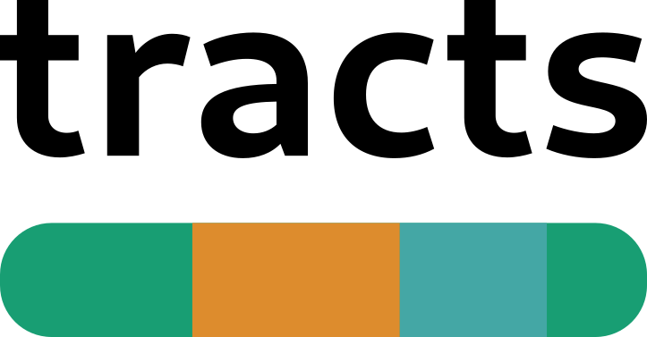
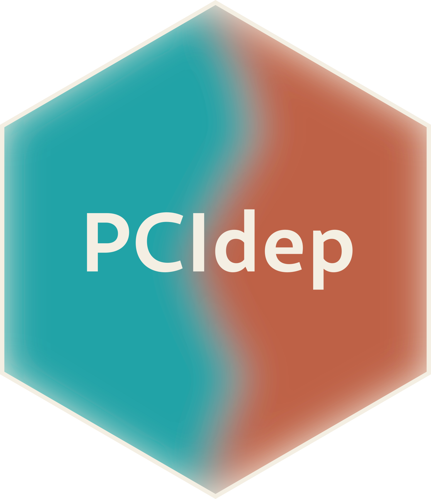
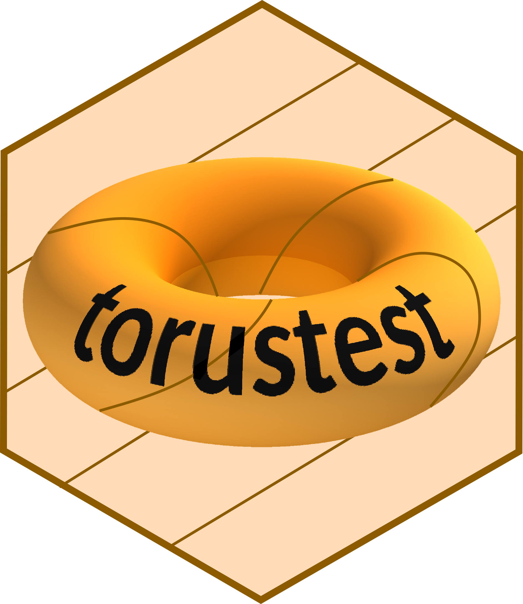
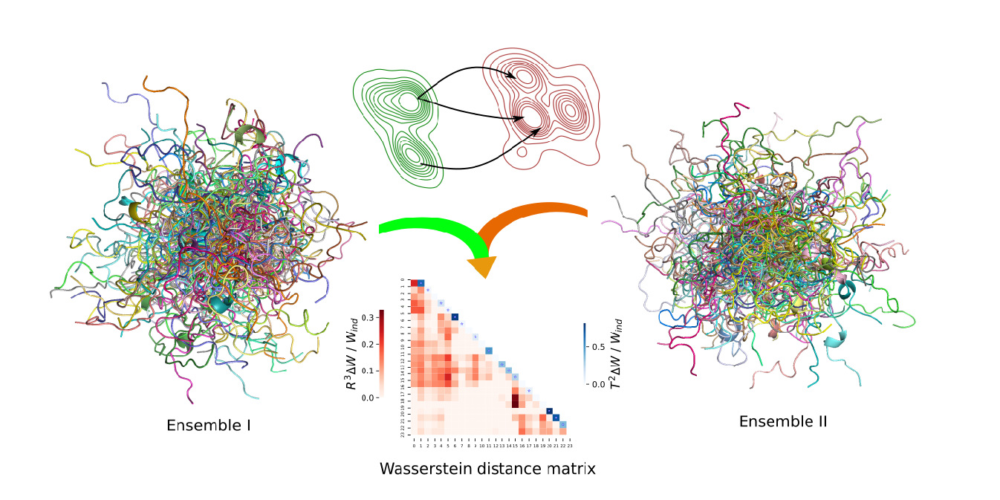

Softwares
This page gathers software and computational tools developed (and maintained) in my research.

tracts
A Python package for modelling ancestry patterns along the genome, including sex-biased migration and X-chromosome admixture.
Python Package
PCIdep
An R package for post-clustering inference under arbitrary dependence between features and observations.
R Packagemanifoldtest
An R package for testing independence between manifold-valued data (torus, hyperbolic space, Grassmannian) using distance covariance.
R Package
torustest
An R package for two-sample goodness-of-fit testing on the two-dimensional torus using optimal transport.
R Package
WARIO
A Jupyter notebook to characterize intrinsically disordered protein ensembles as a weighted family of contact maps.
Jupyter Notebook
WASCO
A Wasserstein-based Jupyter notebook designed to compare ensembles of intrinsically disordered proteins.
Jupyter Notebook